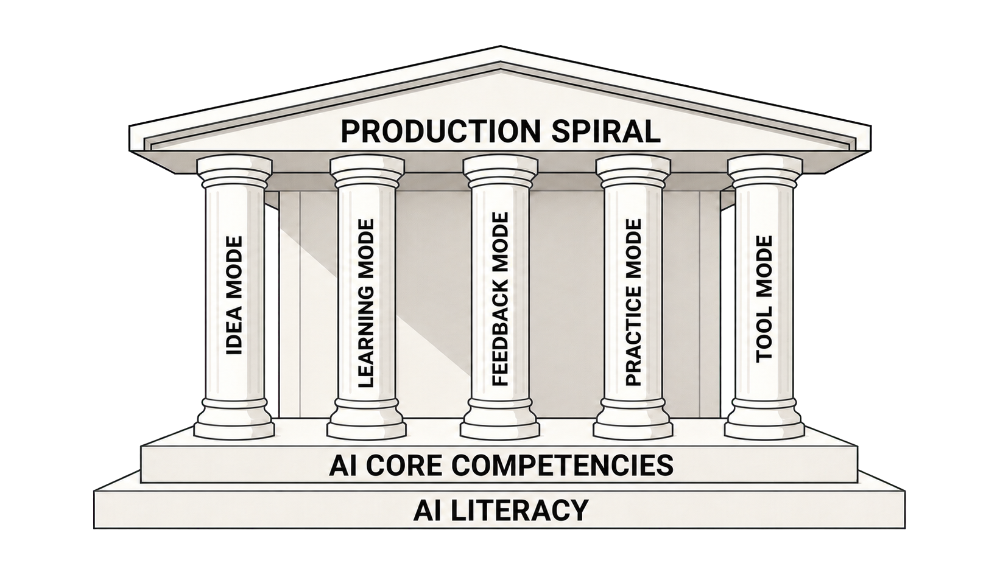
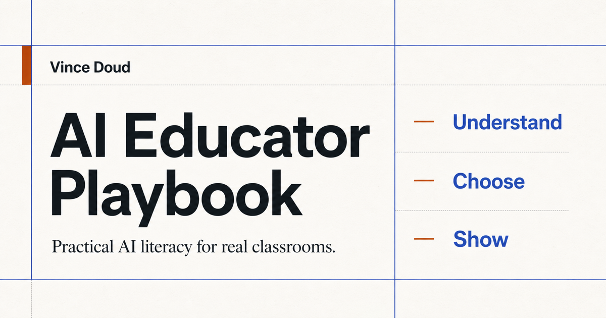
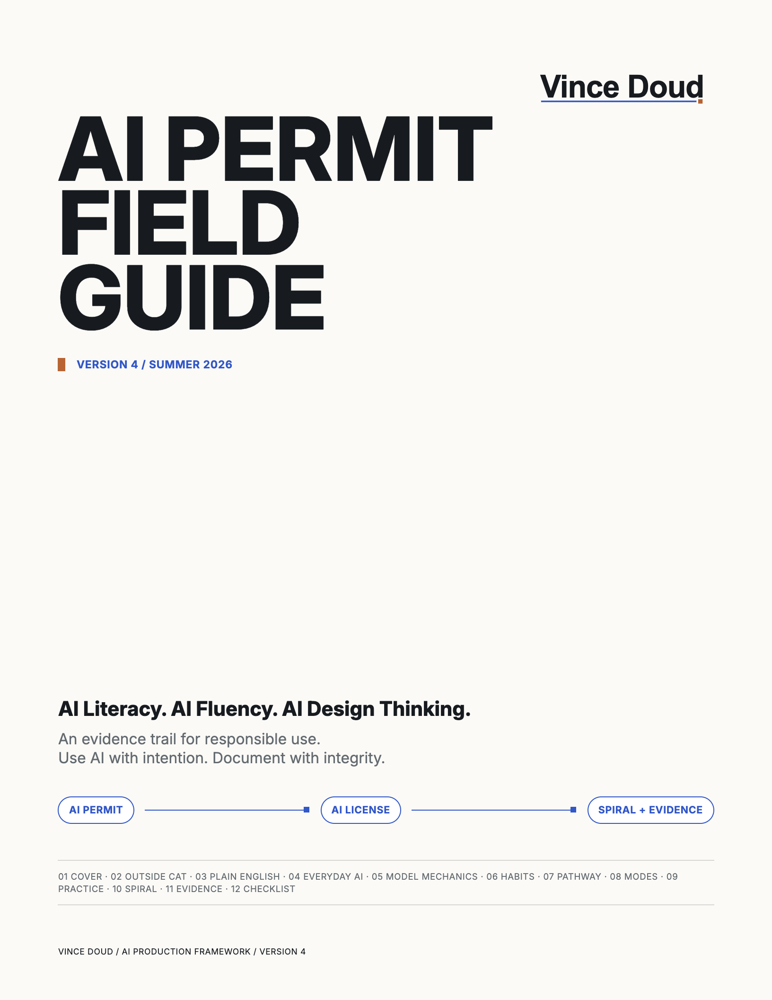
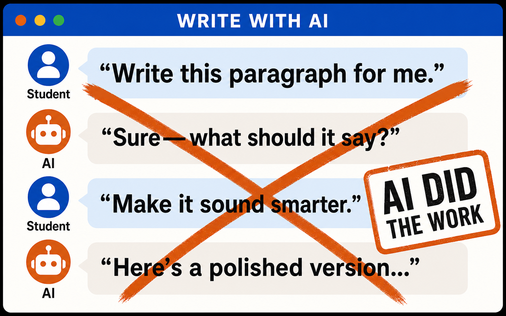
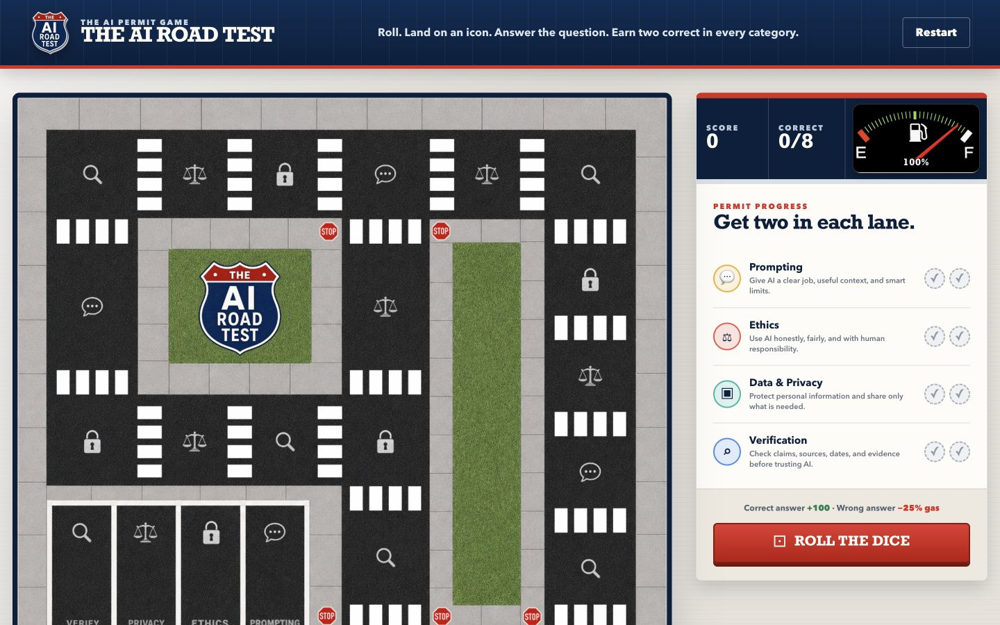
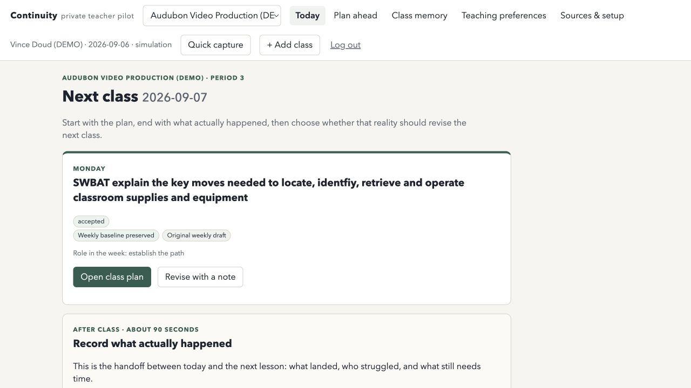
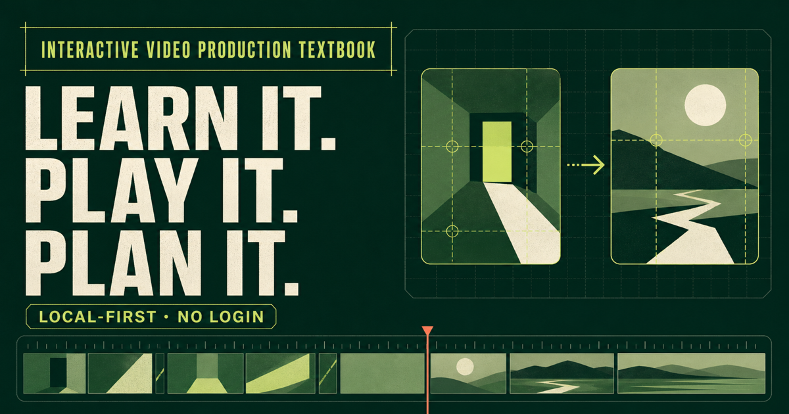
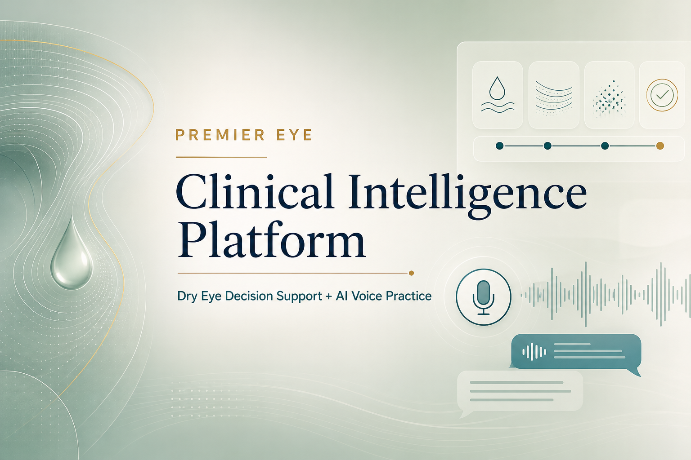

AI Production Framework
A practical structure for choosing AI’s role before choosing a tool.
01 / Project archive
Useful experiments, systems, resources, and things built with AI.

A practical structure for choosing AI’s role before choosing a tool.

An evolving teacher-and-student guide for choosing AI’s role and showing the thinking.
Open public resource ↗
Plain-language practice around privacy, verification, authorship, and responsible use.
Open PDF ↗
A two-round activity about useful support, substituted thinking, authorship, and revision.
Open activity ↗
A playable browser activity about prompts, privacy, ethics, and verification.
Open Road Test ↗
A local-first teacher system for carrying context between class meetings.

A local draft built for learning through interactive production decisions.

Dry-eye workflow support and simulated eye-office conversation practice.